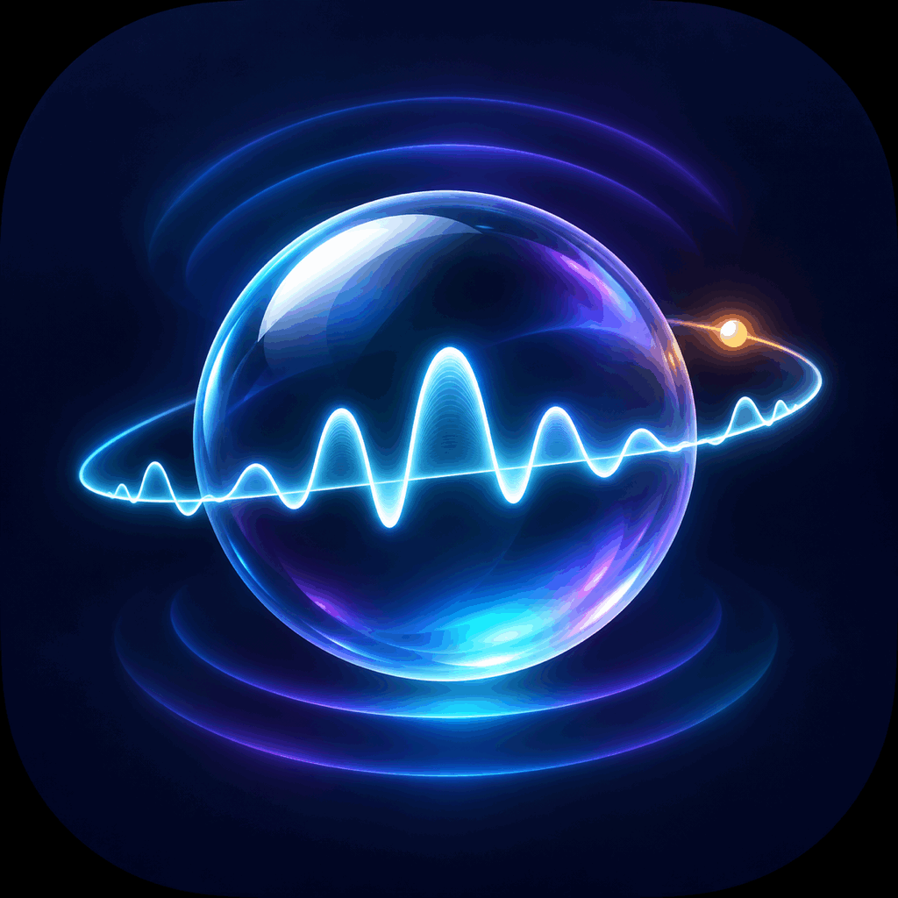

01 / POSITION
YOU
Place the sound.
Move the stereo image to the front, back, left, or right. Tap center to return to a forward-facing position.

orbplay Get Orbplay ↗Give the sound from your Mac a place to be. Shape your system audio with a live equalizer, directional controls, and optional camera-based head tracking.
Orbplay lives in your menu bar and processes your Mac's system mix through a native Core Audio pipeline. Keep your listening controls close while music, video, and calls play in their own apps.
Move the stereo image to the front, back, left, or right. Tap center to return to a forward-facing position.
Ten adjustable bands and six starting points, from a clean flat response to Bass Boost and Treble Boost.
Optional Vision-based face orientation tracking adjusts the scene as you turn. Pick a sensitivity and recenter whenever you like.
Orbplay uses Core Audio to capture the system mix and route processed audio to a selected output. Headphones are recommended for the clearest directional effect. Bluetooth output works, though its codec and buffering can add latency.
Read the installation guide ↗Audio processing happens locally. Camera access is optional, used only for head tracking, and face analysis stays on your Mac. Orbplay does not save video or send audio to a cloud service.
If your Mac or connected camera supports Center Stage, turn it on in macOS video effects before starting face tracking. It's a recommendation for keeping your face in frame—not a requirement. Orbplay still uses Vision to detect your face orientation.
Free and open source. Built for the Mac you already use.
Get Orbplay for Mac ↗